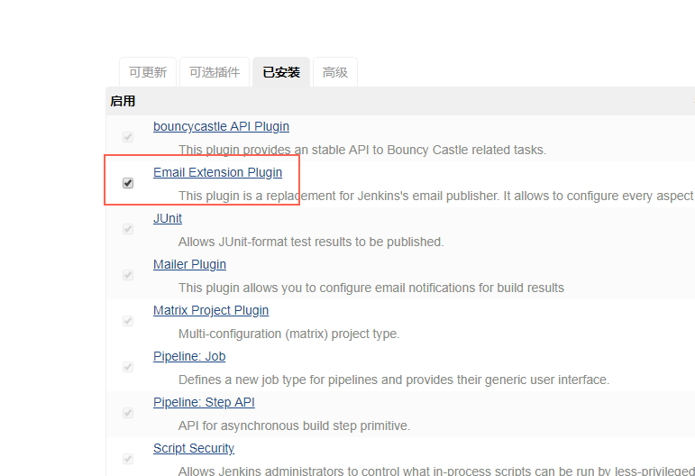
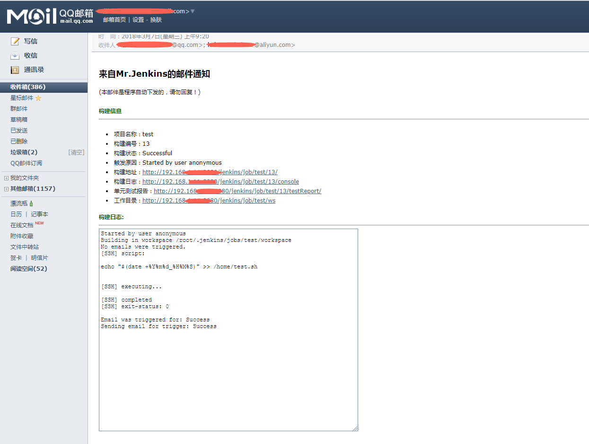

简介
jenkins集成mail通知服务不再说明，功能简单，这里简单说下常用mail插件Email Extension Plugin
安装Email Extension Plugin

配置Email
系统管理>系统设置>Extended E-mail Notification
下面是我的配置，改动不大，邮件通知帐号在系统集成email处配置，这里主要提下插件通知模版

配置默认模版
Default Content Type配置为html
标题
1 | 构建通知：$PROJECT_NAME - Build # $BUILD_NUMBER - $BUILD_STATUS! |

内容
1 |
|
添加项目构建

通知展示
